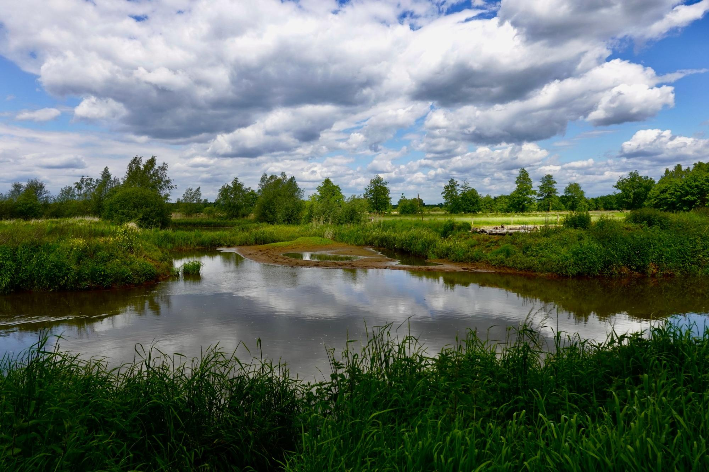
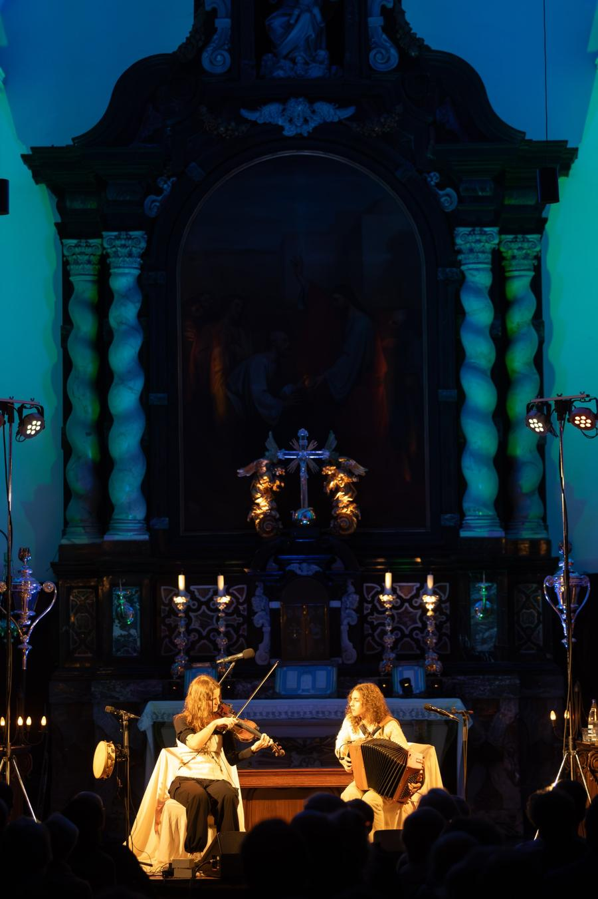
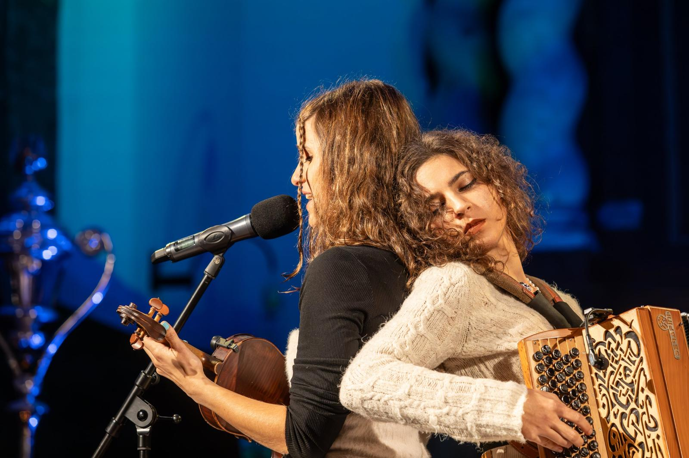

Folk die wortelt in een landschap
WESP vzw is de organisatie achter Merodefestival. We zijn een sectorvormende werking voor folk- en wereldmuziek in Vlaanderen: we presenteren, creëren, begeleiden artiesten en vertellen hun verhaal.
Wat begon in de kerken en natuurgebieden van de Merode, groeit vandaag organisch verder naar Leuven, Holsbeek, Limburg, Antwerpen en Brussel.

De Merode-methode
Het landschap is bij ons nooit decor. Een abdij, een dorpskerk of een broekbos is een bewuste artistieke keuze die mee bepaalt hoe muziek klinkt, wat ze vertelt en wie ernaar komt luisteren.
Die manier van werken is de basis van alles wat we doen, van een kapelconcert tot een driejarig stadsproject.

Muziek
Akoestisch, melodisch en verhalend. Traditie en eigen werk, makers van hier naast internationale namen.
Landschap
Muzikale wandelingen, concerten in natuurgebieden en luisterplekken in Landschapspark de Merode.
Erfgoed
Abdijen, kerken, kapellen en volkscafés, en de liederen en verhalen die erbij horen.
Gemeenschap
Kerkfabrieken, gemeenten, een veertigtal vrijwilligers en een publiek dat terugkomt.
Wat we doen
Drie sporen die elkaar versterken.
Presenteren
Concerten op uitzonderlijke plekken, het hele jaar door.
- Kerkconcerten in de Merode en het Merodefestival
- Holsbeek Sessies en Limburg Sessies
- PARK Festival en Beleuvenissen in Leuven
- Programma’s met cultuurcentra, onder meer De Bogaard in Sint-Truiden en CC Gasthuis Aarschot
Creëren en begeleiden
We coproduceren nieuw werk en staan naast artiesten.
- Residenties, onder meer voor Aram en Kalesma
- Productie van De Antwerpse Stadsgitaar met Jeroen Knapen
- Tourmanagement, zoals de tournee Rhagium Inquisitor van Andries Boone
- Ondersteuning bij subsidies en spreiding
Verhalen vertellen
Muziek die blijft, ook na het concert.
- Het boek Ode aan de Merode
- De wandelpodcast met folkmuzikanten
- The Sound of the Abbey op cd en vinyl
- Videoportretten over volkscafés en volksliederen
Projecten en netwerk
- 2026–2028Website
Klanken van de Steden
De muziekcultuur van migratiegemeenschappen in Antwerpen en Brussel, met residenties, concerten, portretten en wandelingen. Samen met Muziekpublique, MIM en Muziekmuseum Vleeshuis.
- 2027–2028
De Antwerpse Stadsgitaar
Met Jeroen Knapen, bij Muziekmuseum Vleeshuis, richting het Antwerpse muziekjaar.
- DoorlopendWebsite
Folkwaarts
Een bovenlokale werking rond folk met organisatoren uit Limburg en daarbuiten: gezamenlijke concerten, aankopen en vorming.
- Jaarlijks
Flanders Folk Network
Een netwerkavond voor folkprofessionals in Vlaanderen. Volgende editie op 8 juni 2027.
- 2026Meer
The Sound of the Abbey
Opnames uit de Abdij van Park, met onder meer Naragonia Trio, Rénélius Ensemble en Andries Boone.
- 2025Website
Derroll 100
Expo, concerten en een boek rond banjospeler Derroll Adams, met Awa vzw, Muziekpublique, ’t Ey, Vleeshuis en MIM.
Voor artiesten
We werken met makers die vertrekken vanuit traditie en een eigen stem zoeken, vaak over meerdere jaren.
Sara Salvérius, Laura Cortese, Andries Boone, Naragonia, Griff Trio, Rénélius Ensemble, Myrddin, Wouter Vandenabeele, Airboxes, Bamako Express, WÖR, Kongero, Shalan Alhamwy en vele anderen.

Werk je aan een project?
Een creatie, een residentie op een bijzondere plek of hulp bij spreiding: vertel ons waar je mee bezig bent.
Samenwerken
Cultuurcentra en organisatoren
Een concert, reeks of tournee op maat, of een programma dat we samen opbouwen.
Bekijk onze productiesWe werken onder meer samen met
Landschapspark de Merode, Muziekpublique, Muziekcentrum Dranouter, Cluster, Brossella, Muziekmuseum Vleeshuis, MIM, Abdij van Park, Abdij van Averbode, Natuurpunt, Stad Leuven, Flanders Folk Network en Folkwaarts.
Team
Een kleine kern, een groot netwerk en een veertigtal vrijwilligers.
- Coördinatie en dagelijkse leiding
- Jochen Smets
- Artistiek team
- Bart Aerts, Marc Vandemoortele, Jochen Smets
- Vaste medewerkers
- Maarten Deboes, Tim Janssen, Bert Huysentruyt, Jules De Roye, Reinhart Croon
- Contact
- jochen@wespvzw.be, 0498 75 82 96